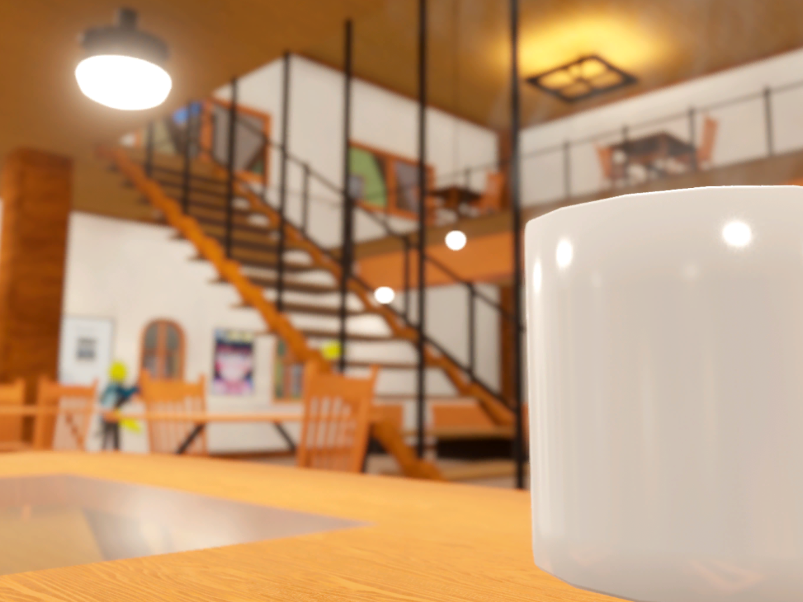
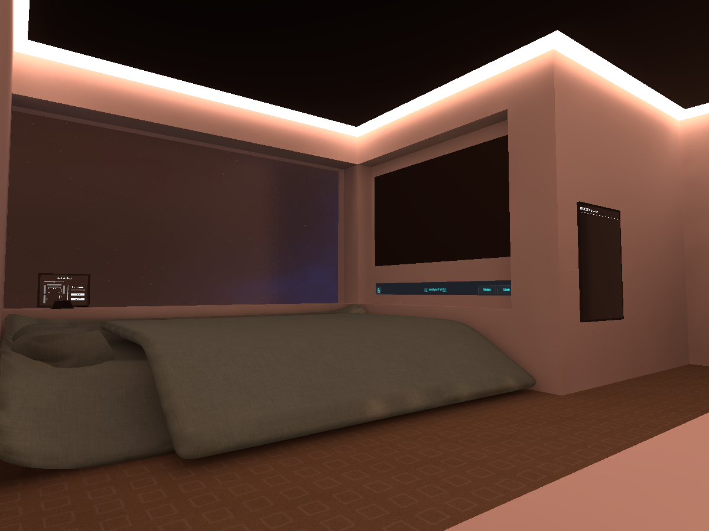
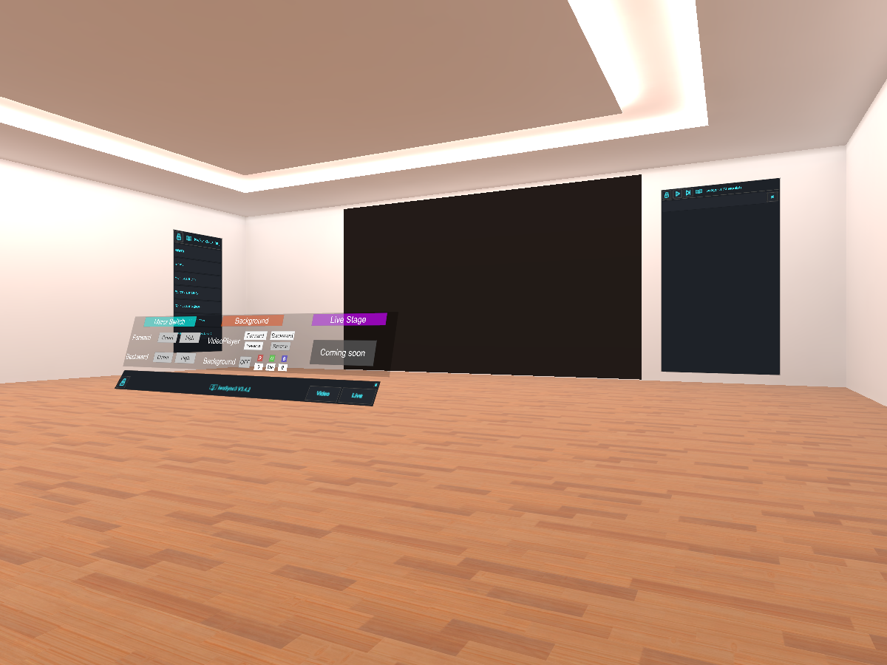

私について
このサイトの大部分はChatAIくんが作りました。
でも途中から色々やってもなんかうまく行かなくなったので諦めました。
制作物一覧

このワールドは、カフェのテーマのVRChatのワールドです。カフェは二階建てで、外には噴水と川があります。
町並みはヨーロッパ風で、コーヒーや紅茶を作ることができます。また、ドーナツやメロンパンも提供しています。
さらに、ペンやビデオプレイヤーも用意されています。是非、このワールドを楽しんでください。にゃ。

このワールドは、寝るためのワールドです。入るとすぐ右にベッドがあります。
また、このワールドは約3時間で作成されました。
このワールドには、ペンやビデオプレーヤーなどがあります。
また、ナイトモードやミラーも備わっています。
その上、このワールドには、ワールドに入った瞬間寝落ちた人を、ベッドまで運ぶことができる棒が設置されています。
このワールドは、寝るために理想的です。にゃ。

このワールドは、ダンスの練習に最適なものです。
ワールドに入ると、四方に動画プレイヤーがあります。
動画プレイヤーの画面は、左右反転させることもできます。
また、このワールドは製作中であるため、一般には公開されていません。
このワールドは、ダンスの練習にぴったりです。にゃ。